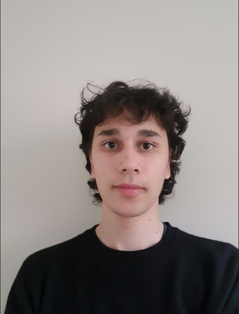
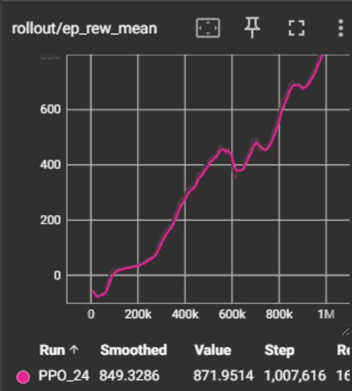
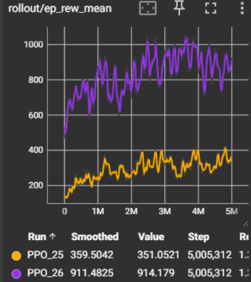
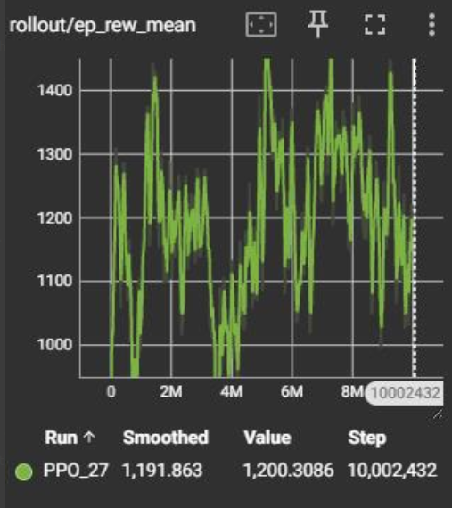

This project aims to teahc a bipedal walker agent to walk using reinforcement learning.
ENTER ADDITIONAL ABSTRACT TEXT HERE if needed. You can describe your methodology, training setup, or key results in this second paragraph.

Training curves and TensorBoard metrics from our PPO experiments.



ENTER DISCUSSION TEXT HERE. Discuss the results of your experiments — what worked well, what didn't, and why. Comment on the training stability and final performance of your PPO agent.
ENTER FURTHER DISCUSSION HERE. You might discuss hyperparameter sensitivity, comparison to baselines, limitations of your approach, or unexpected behaviours observed in the walker.
ENTER FUTURE WORK HERE. Describe potential extensions or improvements to the project, such as alternative algorithms, reward shaping strategies, or environment modifications.